03
Loom 3: All Tussar Warp
A 2 ply medium Tussar warp with Tussar weft showed how silk behaves on silk. The uneven thickness of the yarn affected the stability of the warp, so yarn preparation and breakage control became important.
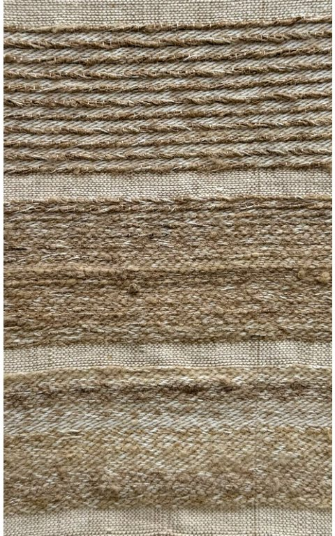
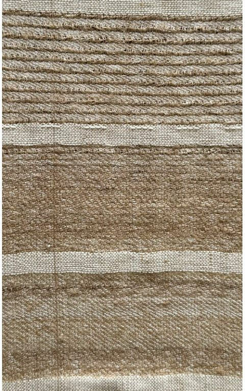
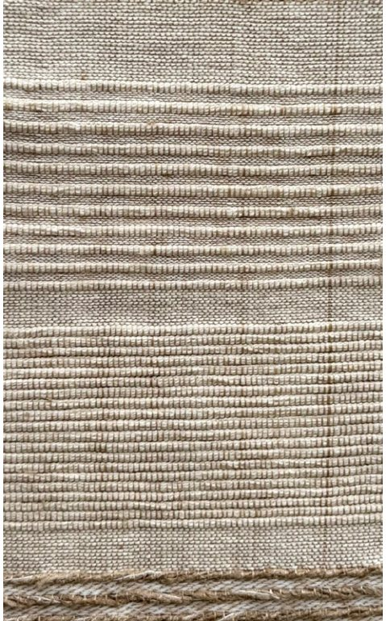
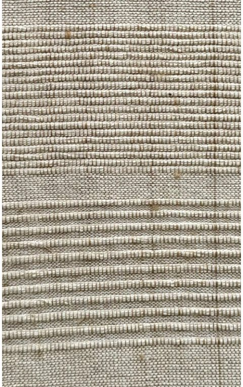
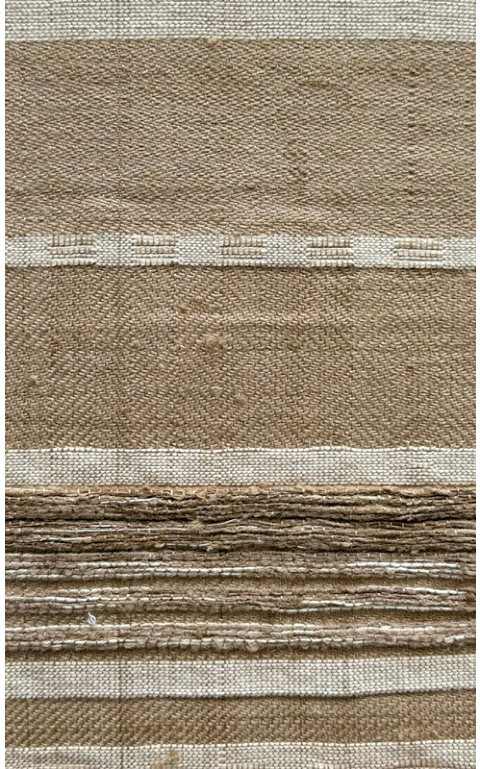
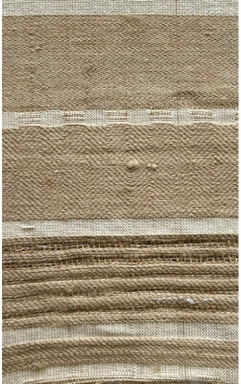
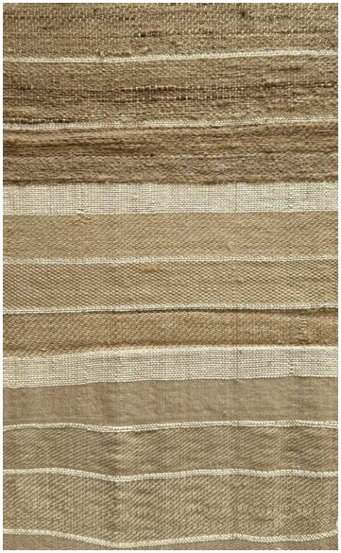
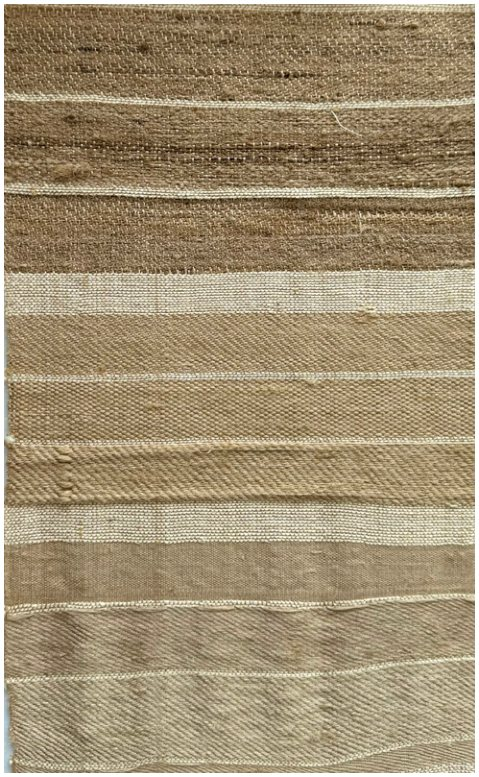

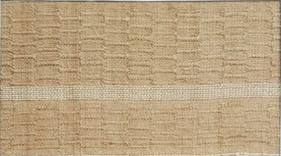

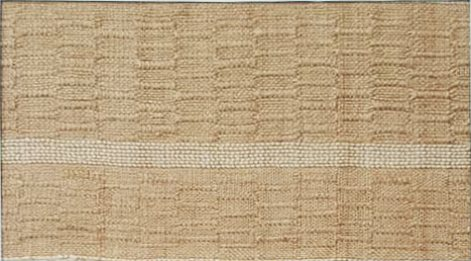
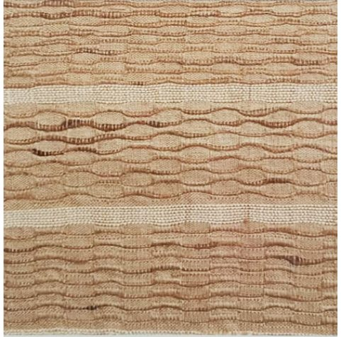

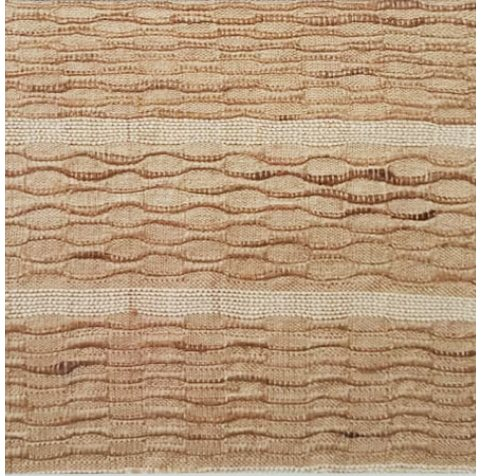